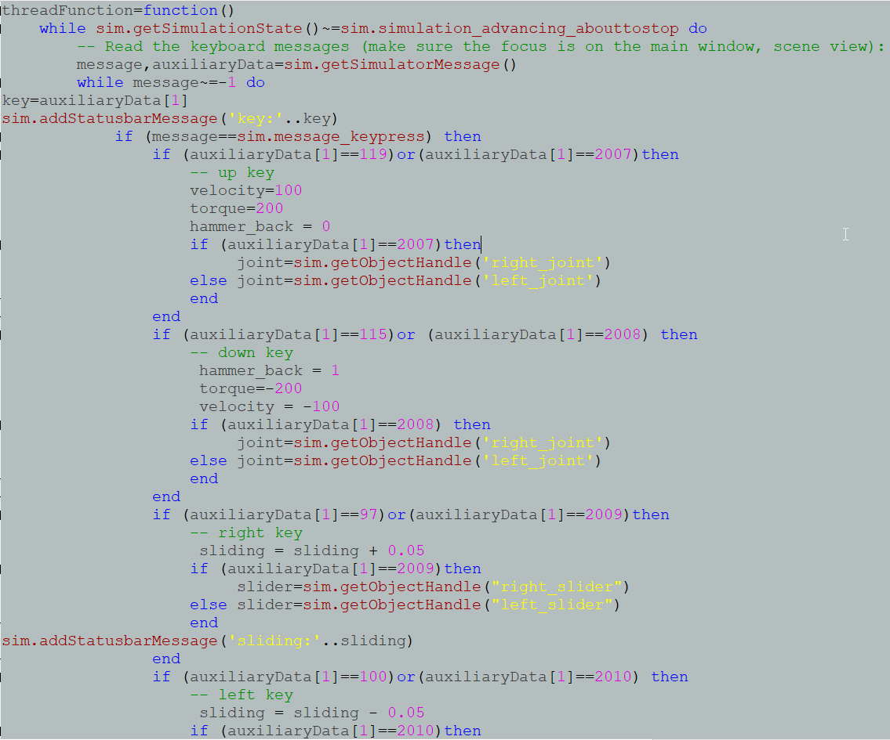
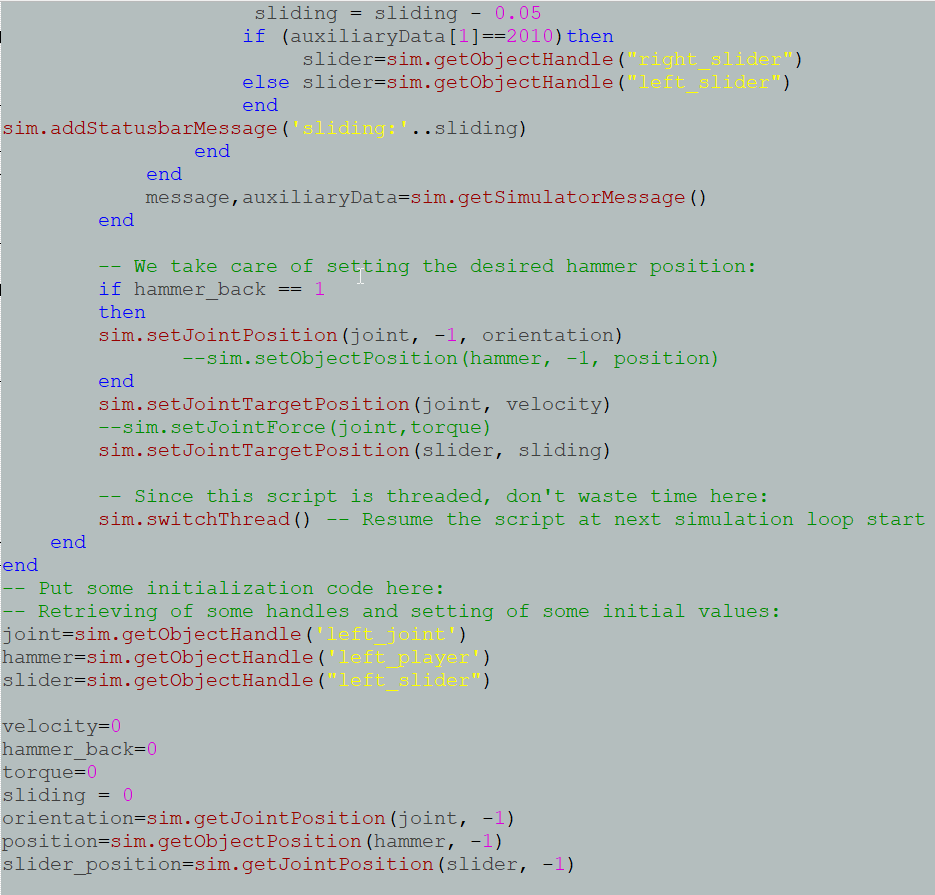
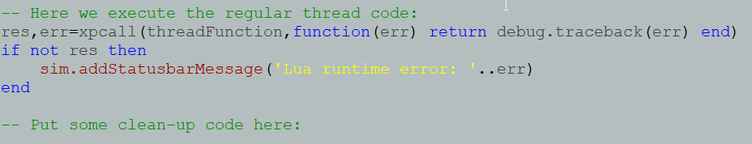
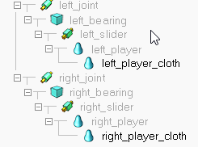

Week11 to Week17
Week11
影片連結: https://www.youtube.com/watch?v=hiw8xg1cV4M&t=11s
process explanation
下列的圖面解說如下

以上圖的 if then else end 來說，根據 lua language ，先用 if 給予假設我要的條件，接著寫上 then 後並執行我要的動作，再來是 else 是用完上面 if then 才接著告訴它我的假設並不是如上面的 if then 的話，所以是用來額外假設我上個假設是錯的，並執行其他的動作，寫完 else 後在給予 end ，是為了將一個迴圈封閉，有了開始也必須要結束的概念。

由上圖所示有紅字的部分是對括號中的項目進行指定，像是sim.setJointTargetPosition(joint, velocity)，是指模擬並設定旋轉軸的目標位置為(旋轉軸 , 速度)這樣作為解釋。
上圖還有類似黃色的字樣是指，我針對地物件是圖面上的什麼東西，像是joint=sim.getObjectHandle('left_joint')，是指 joint = 模擬並得到項目的處理('left_joint')這麼解釋的。
上圖還有給予參數，像是速度 = 0、人偶回程 = 0、扭矩 = 0，還有滑動過程 = 0。

上圖的這條程式碼是要關閉整個 lua system 的程式，這樣才能流通為一個正常的一串程式碼，那這樣的寫法是要讓他一直跑一整條所寫下的程式。

上圖所示為桿件的連接方式，以V-rep來說，每一個物件想要讓它旋轉或是平移都需要在途中給予物件連接性，以上突來講，我想讓物件既可旋轉也可以平移，所以我在 joint 跟 slider 之間放置一個物品，最主要是以裡面的物件程式，它會判定要求要有物件連結才能進行物理運動，相同的我也必須要套用人偶，所以我在 slider 跟 player 之間又放入一個實體物件，進行串聯，這樣才不會因為 player 為 skin 的關係而造成錯誤。
------------------------------------------------------------------------------------------
Week12
影片連結: https://www.youtube.com/watch?v=TYlWAmBfWuU&t=46s
process explanation

延續上周所提到紅字的部分，像是sim.addStatusbarMessage('sliding:'..sliding)是指模擬時加入狀態訊息('指定上方條件滑動過程:' .. 滑動過程)在模擬的下方訊息顯示出平移滑動時的增減平移距離。


上圖所示有多數的桿件都放入上面兩張的程式碼各別放置到各個桿件中，事實上這是其中一個方法，但仍然是建議將全部的迴圈寫入至同一個程式碼流程內會更好，以V-rep來說寫入子程式應該是對於部分桿件的各自編寫細節，而不是將主要程式寫入子程式，本體的程式則是得寫入全部的桿件並做動的迴圈指令才是正確的，然而在這周我是將封閉地程式碼各別放入桿件子程式中，且主程式為空的狀態。
----------------------------------------------------------------
Week13
影片連結: https://www.youtube.com/watch?v=BOwD2FSJiyg
process explanation

以上圖 local 的陣列給予指定，
像是 local joint_b = {'left_joint','left_joint2','left_joint3','left_joint4'} 來說是指，對 joint 做局部陣列定義並等於 { 'left_joint','left_joint2','left_joint3','left_joint4'} 這些。
以上圖紅字，像是 joint_all_x1=sim.getObjectHandle(joint_b[1]) ，是要告訴它joint_all_x1 = 模擬項目處理(上面 joint_b 陣列中的 'left_joint') 的意思。

上圖的平移範圍設定，像是 if (sliding_b >= 0.35) then 、else sliding_b = sliding_b + 0.05，是要假設 (sliding_b大於等於0.35) 後，告訴它 sliding_b = sliding_b +0.05 的平移距離。

以上圖的紅字設定是各別給予針對地速度 (名稱 , 速度) 或是滑動過程 (名稱, 滑動)。

以上圖所示，是在給予指定的物樣在模擬時得到項目的處理 (上面 local 所針對的陣列)，再給予參數，速度 = 0、人偶回程 = 0、扭矩 = 0、滑動過程_a = 0、滑動過程_b = 0，接著給 旋轉軸方向 跟 人偶位置 的讀取 () ，最後再關閉 lua 完成這整串程式。

以上的四張圖為主程式碼的部分，與上周的不同是將程式碼寫成封閉單個並各別放入各自桿件的子程式。
-----------------------------------------------------------------------
Week14
影片連結: https://www.youtube.com/watch?v=8oRFduQYJLk
process explanation

上圖為本組 onshape 設計的足球場，前面幾周因為單獨使用程式而已，所以還沒直接丟入圖面，現在是有將圖檔複製後再載並轉為 .stl 檔匯進 V-rep 中並簡化，那過程是順利地與程式套用


上圖為這些桿件跟圖檔簡化後圖元連結的詳細結構狀態，這次在 slider 放入桿子 pole 為實際模擬真實的手足球檯的控制桿可以平移連動，再給予 people 到 pole 的連接下方。
---------------------------------------------------------------------------
Week15
---------------------------------------------------------------------------
Week16
----------------------------------------------------------------------------
Week17
Week1 to Week10 << Previous Next >> Experience